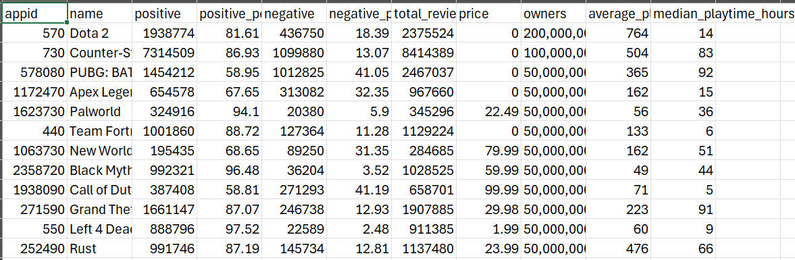

Top Steam Game Analysis
Overview
In this project, I will be doing an analysis of the top 100 Steam games since March 2009. I will giving a detailed report of the entire analysis process starting from data extraction, transformation, and loading, to visualization and analysis.
Goal
My goal is to grasp a better understanding of what makes these games top the Steam charts since 2009. I will explore these questions:
- What is the correlation between game price and average playtime?
- What is the correlation between number of positive reviews and average playtime?
- What is the correlation between number of positive and total reviews?
- What is the correlation between total reviews and average playtime?
- Do paid games have more positive reviews than free games?
- Are there more paid or free games in the top 100?
Tech Stack
- Python (Extraction and Transformation)
- Pandas (Loading)
- Microsoft SQL Server (Store Data)
- PowerBI (Visualization)
Dashboard
Extraction
I did research looking for data that was both meaningful and convenient to retrieve. I first searched on Kaggle looking at these two datasets:
- Dataset 1 data seemed to be a strong candidate as there were a lot of different fields to do analysis off of. However, upon further inspection of the data it looked to be incorrect and/or outdated. I decided to look at another dataset I had more confidence in.
- Dataset 2 also seemed promising but looking at the data, it was outdated about 5 years.
With no other publicly and readily available datasets to choose from, I decided I had to create my own. I looked at various websites that holds information about Steam's games. These included SteamDB, Steam's Official API, and Steam Spy.
- SteamDB is a third party website that collects data from Steam and allows you to view more in-depth information such as price changes and app ID. They also provide additional tools such as Steam charts, sales, and account calculator. This seemed like the best way to gather information as I planned on web scraping the info from this website. Unfortunately, web scraping was prohibited from the website, so I had to explore other options.
- Steam's Official API was another option I considered, grabbing information directly from the source. Using Steam's API, I grabbed a list of appIDs I would use to gather the information. By making a GET request using the respective appID: https://store.steampowered.com/api/appdetails?appids=550, I could gather a list of each games information and store it. This process seemed to be the best solution, but I came across an issue regarding API rate limiting. Steam only allows about 100,000 request a day and about 1 request every 10 seconds. Gathering the data of this list of games would take over a month to complete. Again, the information is there but not readily available for use.
- Steam Spy's API is a similar website to SteamDB where they track Steam game information. This website, however, has a publicly available API which has the all the correct information needed: price, average playtime, reviews, etc. I ended up using this API to extract my data from as it was up-to-date and accurate.
After deciding to go with Steam Spy's API, I moved on to transforming the data.
Transformation
I will be using Python with Pandas to extract and transform the data.
Here I only have to make a single request to the API endpoint which will get all the information necessary. Only needing to call once solves our rate limiting issue:
apiEndpoint = "https://steamspy.com/api.php?request=top100forever"
response = requests.get(apiEndpoint)
data = response.json()
This is an example of the data being sent by the API:
"730": {
"appid": 730,
"name": "Counter-Strike: Global Offensive",
"developer": "Valve",
"publisher": "Valve",
"score_rank": "",
"positive": 7325394,
"negative": 1102354,
"userscore": 0,
"owners": "100,000,000 .. 200,000,000",
"average_forever": 29986,
"average_2weeks": 904,
"median_forever": 6013,
"median_2weeks": 337,
"price": "0",
"initialprice": "0",
"discount": "0",
"ccu": 1595114
},
I proceed to extract the data from this request, only processing the necessary keys I want to do analysis on:
for appid, appInfo in data.items():
dataList.append({
"appid":appid,
"name":appInfo.get("name"),
"positive":appInfo.get("positive"),
"positive_percentage": round((appInfo.get("positive") / (appInfo.get("positive") + appInfo.get("negative")) * 100), 2),
"negative":appInfo.get("negative"),
"negative_percentage": round((appInfo.get("negative") / (appInfo.get("positive") + appInfo.get("negative")) * 100), 2),
"total_reviews": appInfo.get("positive") + appInfo.get("negative"),
"price":int(appInfo.get("price"))/100,
"owners":appInfo.get("owners"),
"average_playtime_hours": round((appInfo.get("average_forever") / 60), 0),
"median_playtime_hours": round((appInfo.get("median_forever") / 60), 0),
})
df = pd.DataFrame(dataList)
Loading
I used Pandas to load my data into both a .csv and a Microsoft SQL Server Database.
engine = sqlalchemy.create_engine(f'mssql+pyodbc://{username}:{password}@{server}/{database}?driver=ODBC+Driver+17+for+SQL+Server')
df.to_csv('topgames.csv', index=False)
df.to_sql('game_data', con = engine, if_exists='replace', chunksize=1000)
Below is the loaded in data into topgames.csv:
Visualization
I used PowerBI to create my visualization reports. I used this as it has easy integration with MSSQL Server and CSV files. Loading in the data to PowerBI, I imported it from the MSSQL Server.
Analysis
In this section, I will be answering the questions asked above by providing data visualizations and explanations for this data.
What is the correlation between game price and average playtime?
There is a very weak (0.1 > x > 0.0) correlation between these two fields. This indicates that price does not have a determining factor on whether or not a game is played for a long time. This primarily depends on game genre such as story games or games that have competitive play. Story games have a definitive end to them meaning that after players finish the main story, there is not much more content to spend in the game, reducing the average playtime compared to games with competitive play. We can see a couple of these story games at $60 with Red Dead Redemption 2, Hogwarts Legacy, and Baldur's Gate 3. Games with competitive play tend to see a greater playtime due to their returning players continuing to try and get a better rank. We can see two of these games, Dota 2 and Counter-Strike: Global Offensive (now called Counter-Strike 2) with two of the highest average playtimes. These games have both competitive play and are free.
What is the correlation between number of positive reviews and average playtime?
There is a moderate correlation (0.8 > x > 0.5) between these two fields. Those who played longer or games that have longer playtimes tend to receive more positive reviews. This potentially could be because players felt like they got their money's worth with the purchase of the game and the time spent playing. The graph above shows most of the data sitting around the 5 to 300 hour range, with it slightly moving up the more average hours. We see two outliers again with Dota and Counter-Strike: Global Offensive as they both exceed the average range by almost double. Again, with the type of games they are, they tend to move away from the trend.
What is the correlation between number of positive and total reviews?
We can see there is a strong correlation (1 > x > 0.8) between these two fields. This means the majority of the reviews left on a top rated game tended to be positive. This shows that players are willing to give give a game a review if they enjoyed playing it. This correlation also suggest that the more reviews these top games have, the more likely the majority of the reviews will be positive. We can see this trend in the graph above where there is a direct correlation between the two.
What is the correlation between total reviews and average playtime?
There is a moderate correlation (0.8 > x > 0.5) between these two fields. Players who have played the game longer will most likely give a review to the game. This shows the willingness a player has the more time invested in a game to express their opinions. We can see an upward trend in the data showing the more reviews a game has the higher average playtime the player has.
Are there more paid or free games in the top 100?
The data shows we have 66 games which are paid and 34 games which are free.
Do paid games have more positive reviews than free games?
Although there are more paid games in the top 100, we can see proportionally free games have more average positive reviews. This shows that paid games do not always provide more meaningful positive outcomes than if it were free. A possible reasoning for this is players will be more inclined to leave a positive review since they got game content without having to buy anything.
Conclusion
There is not one single factor that makes a game top the Steam charts for years. The amount of playtime a player can get out of a game has a good influence on the games reviews. Additionally, the game being free vs. paid has a great effect on reviews as well. Lastly, the game type is a driving factor into how many hours players spend in the game. Competitive games turns players into spending more hours in game, which then inclines them to leave more positive reviews. Story games on the other hand, look to provide great game content which inclines players to leave more positive reviews.
An interesting trend I saw with the different graphs were the two consistent outliers, Dota 2 and Counter-Strike: Global Offensive. These two games were both created by Valve (who owns Steam) so there potentially could be another reasoning for why these top the charts aside from their content or game type.
Reflection
There is a lot that goes into making a great game and have it top the Steam charts for years. Through this research, I hoped to have given more insight on why these games do. For further work on this analysis, I would like to find another way of retrieving this similar data and compare it to mine to ensure consistency across all fields. Additionally, I would like to look more into different fields within these games such as their game type (genre) and release date.